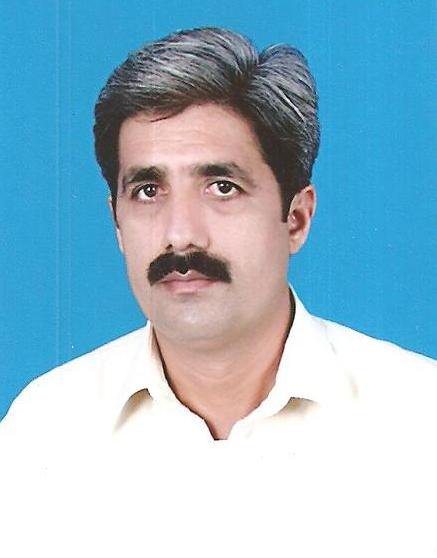

Najib ul Rehman Malik

Summary
Intermediate Full Stack Web Developer with a strong focus on creating scalable, user-centric web applications. Proficient in modern technologies such as React.js, Next.js, JavaScript, and TypeScript, with expertise in styling using Tailwind CSS and ShadCN UI. Skilled in back-end development with PostgreSQL and authentication frameworks like KindeAuth and NextAuth.
Education
- Masters in Economics, Baha ud Din Zakrya University, Multan (1990-1992)
Work Experience
- Senior Auditor - Pakistan Military Accounts Department
Jan 1995 - Oct 2008
- Maintenance of Defence Services Provident Fund
- Audit and Payment of Defence Services Provident Fund
- General Correspondance
- Accountant - Central Warehouse & Supplies, Min of Population Welfare, Pakistan
Nov 2008 - July 2010
- Preparation of Budget Proposals
- Procurement of Stores Supplies
- Disbursement of Salaire of Staff
- Payment to Vendors for Supplies of Stores
- Reconciliations of Accounts with Accountant General of Pakistan Revenues
- Conduct of Audit of yearly Expenditures
- Accountant - Population Welfare Department, Punjab, Pakistan
Aug 2010 - Aug 2023
- Preparation of Budget Proposals
- Procurement of Stores Supplies
- Disbursement of Salaire of Staff
- Payment to Vendors for Supplies of Stores
- Reconciliations of Accounts with Accountant General of Pakistan Revenues
- Conduct of Audit of yearly Expenditures
Skills
- HTML
- CSS
- Tailwind CSS
- Shadcn/ui
- Bootstrap
- JavaScript
- Python
- ReactJs
- NextJs
- jQuery
- NodeJs
- ExpressJs
- SQL
- Stripe
- KindeAuth
- NextAuth
- Blockchain
- Ms Office
- Digital Marketing
- Quick Books
Certificates
- Digital Marketing - digiskills.pk
- Quick Books - digiskills.pk
- Certified Cloud Applied Generative AI Engineer - PIAIC
- The Complete 2024 Web Development Bootcamp-Udamy
Others